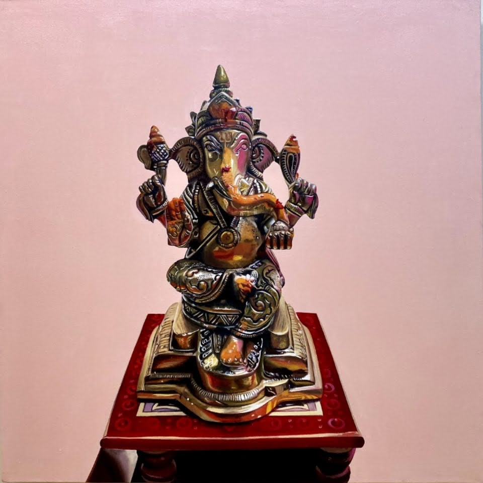
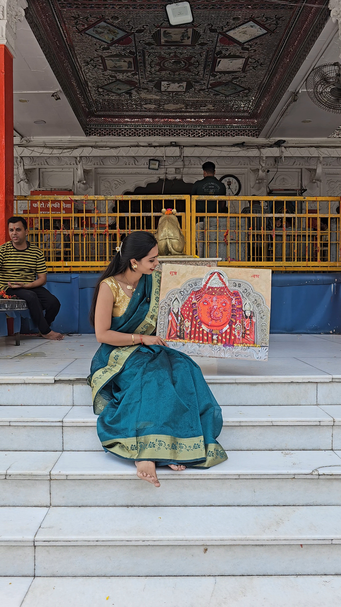

Art Made for You
I create original paintings inspired by people, memories, celebrations, and places that mean something to you.
Every piece is painted by hand, with the person, story, and space it is being created for in mind.
Explore My WorkYour Story, Painted on Canvas
I create hand-painted portraits of couples, families, parents, grandparents, and individuals.
Most portraits begin with a photograph. Before I start, we can discuss the size, background, colours, and any details you would like to include.
A portrait can celebrate a wedding, anniversary, family memory, or simply turn a favourite photograph into something you can keep for years.

Couple Portraits
A special photograph or memory turned into a personal painting for weddings, anniversaries, engagements, or gifts.
Family Portraits
A hand-painted portrait of your family created from one photograph or a few different references.
Parents and Grandparents
A meaningful way to turn a favourite family photograph into artwork that can stay with you for years.
Wedding Portraits
Already married but wish you had a painting from your wedding? I can create one using your wedding photographs.
Memorial Portraits
A thoughtful painting created from the photographs you have and handled with care.
Choosing Your Photographs
Clear photographs help me capture more detail. Natural light works best, especially when the face is clearly visible.
If you have a few photographs, send them all and I can help you choose the best one.
Old or unclear photographs can also be shared. I will let you know what is possible before I begin.
Common Questions
Can you paint from an old photograph?
Yes, in many cases. Send me the photograph and I can let you know what can be created from it.
Can you combine people from different photographs?
Yes. We can use different photographs to bring everyone together in one painting.
Can the background or clothing be changed?
Yes. We can discuss these details before I start painting.
Your Pet, Painted With Love
Pets are such an important part of our lives, and a painting can be a beautiful way to celebrate them.
I create hand painted pet portraits from your photographs and focus on the small details and expressions that make your pet special.
It can be a portrait of a pet who is still with you, a much loved pet you have lost, or a thoughtful gift for someone special.
Choosing Your Pet Photographs
Photos taken in natural light and at your pet's eye level work best. Clear photographs of the face and eyes help me capture more of their personality.
If you only have old or blurry photographs, send them anyway. I will let you know what can be created from them.
Common Questions
Can you paint more than one pet together?
Yes. I can use separate photographs if needed.
Can I be included in the painting with my pet?
Yes. We can create a portrait of you and your pet together.
Can you create a portrait of a pet that has passed away?
Yes. These paintings are created with extra care using the photographs you have.

Art Inspired by Faith and Tradition
I create spiritual and religious paintings inspired by faith, devotion, tradition, and sacred stories.
These paintings can be created for your home, prayer room, living space, wedding gift, housewarming, or another special occasion.
We can choose the size, colours, subject, and overall style based on where the painting will be placed.
If you have a particular deity, temple, family tradition, or reference in mind, share it with me and we can create something around it.
Enquire About Spiritual ArtArt Inspired by Colour and Feeling
Not every painting needs to tell a clear story.
My abstract paintings are created using colour, texture, movement, and feeling.
Some pieces begin with a mood or colour palette. Others are created especially for a particular room or space.
If you are looking for original artwork for your home, office, or another space, we can discuss the size, colours, and feeling you would like the painting to have.
Explore Abstract ArtHave Something Else in Mind?
Sometimes an idea does not fit into one category.
It could be a home you grew up in, a place you love, a favourite photograph, a memory, or something completely personal.
Tell me what you would like painted and why it matters to you. We can create something around your story.
A Home
Your childhood home, family house, or another place filled with memories.
A Place
Where you got engaged, a favourite holiday destination, or a place that always stays with you.
A Special Moment
A photograph or memory you would like to turn into a painting.
Personal Gifts
Original paintings for birthdays, anniversaries, weddings, retirements, and other special occasions.

Common Questions
I only have one photograph. Is that enough?
Often, yes. Send it to me and I can let you know.
Can I see the painting before it is finished?
Yes. We can discuss the process before I begin.
Do you ship outside India?
[CLIENT: Please confirm international shipping details.]
More Than Weddings
I also create live paintings at selected events such as concerts, performances, private celebrations, and corporate events.
I paint while the event is happening, capturing the people, atmosphere, and special moments on canvas.
Guests can watch the artwork come to life during the event, and the finished painting becomes a lasting memory of the day.
Enquire About Live Event PaintingOriginal Art for Your Space
I create original artwork for hotels, resorts, restaurants, and other hospitality spaces.
The paintings can be designed around the style, interiors, mood, and story of the property.
From traditional Indian art to abstract and contemporary pieces, I work with you to create artwork that feels connected to the space and adds something special for your guests.
Discuss Artwork for Your Space
Your Wedding, Painted Live
I paint your wedding as it happens, capturing the people, colours, and little details that make the day special.
I arrive before the main celebration, set up my painting space, and begin creating the scene on canvas. As the wedding unfolds, the painting comes to life.
By the end of the celebration, your painting is complete and ready for the final reveal.
Explore Live Wedding PaintingHave Something in Mind?
You do not need to know exactly which category your idea fits into. Tell me what you would like painted, share any photographs or references you have, and we can take it from there.